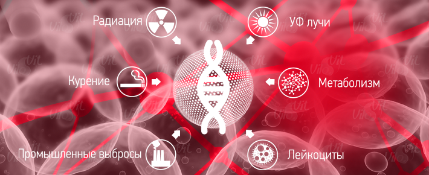

- главная
- причины возникновения болезней
- свободные радикалы
+ 7 (495) 64-111-63
info@vilovit.ru
Стержень Виловит® Источник Вашего Долголетия!
Свободные радикалы - факторы старения и развития многих заболеваний.
Организм человека – это сложнейшее переплетение органических молекул. У всех молекул на внешней оболочке расположены парные электроны. В процессе метаболизма в нашем организме образуются свободные радикалы, которые окисляют каждую клетку, с которыми имеют контакт. В результате, происходят различные нарушения процессов жизнедеятельности. В итоге наш организм устает, ослабевает, становится чувствителен к инфекциям, склонен к воспалению и быстрее стареет.
Свободные радикалы – это реактивные молекулы, лишившиеся парного электрона, которые в процессе поиска стараются отобрать недостающий электрон.
В России их научное название - «АФК» («активные формы кислорода»). В Европе биохимики дали им название - ROS («reactive oxygen species» что в переводе трактует тот же смысл).
Свободные радикалы стремятся присоединить недостающий электрон, проявляя большую химическую активность, при этом все соединения, с которыми они контактируют, окисляются. Главные их объекты – соединения, имеющие двойные связки в частицах (ДНК, липиды, белки и так далее). Стоит отметить, что этот обмен электронами происходит не один раз, это реакция, приводящая к формированию новых радикалов. В результате чего, со временем организм преждевременно стареет, появляются болезни, такие как: Рак, сердечно – сосудистые заболевания, проблемы с опорно – двигательным аппаратом и многое другое.
Учеными доказано, что из-за окисления организма вызванного свободными радикалами, возрастает вероятность возникновения более 80 видов заболеваний.
Виды свободных радикалов
Самыми агрессивными и опасными считаются гидроксидный (ОН-) и кислородный (О2-) радикалы. Водород при взаимодействии с агрессивными формами образует воду, которая естественным путем выводится из организма.
Роль кислорода в организме
Кислород является необходимым элементом для организма. Человеку для жизнедеятельности необходимо вдыхать «кислород». В воздухе всего 20% кислорода, который необходим живому организму для осуществления многих биохимических реакций. Основной функцией кислорода является окисление в окислительно-восстановительных реакциях. Жизнь поддерживается в нашем теле метаболизмом, в котором кислород, который мы вдыхаем через лёгкие, сжигает принимаемую пищу с получением энергии и уничтожает микробы.
Но никто не задумывается, что приблизительно 2% вдыхаемого кислорода трансформируется в активную форму (свободный радикал), который прикрепляется к биологическим молекулам, включая молекулы здоровых клеток, и при этом окисляет и разрушает их.
Для примера:
Человек делает около 20 вдохов в минуту и при каждом из них в организме вырабатывается около 40 см3 активного кислорода. За сутки количество радикалов составляет до 58 000 см3. Учитывая этот постоянный процесс выработки огромного количества активного кислорода, не стоит удивляться, что люди постоянно болеют.
Этот процесс протекает на протяжении всей жизни, что со временем приводит к окислительному стрессу нашего организма, a это значит:
- Нарушение обмена веществ
- Ослабление иммунитета
- Риск раковых заболеваний
- Преждевременное старение
- Обострение хронических заболеваний
- Сердечнососудистые патологии
- И другие недуги
Следовательно, чтобы сохранить здоровье, необходимо подавлять (нейтрализовать) постоянно образующийся в организме «активный кислород». Самым простым и эффективным средством является вода обогащенная водородом с помощью «ВилоВит».
Воздействие свободных радикалов на организм
Радикалы и ДНК.
Если клетка ДНК травмирована, то это может привести к развитию рака или инфаркта. Свободным радикалам «предпочтительны» подобные клетки. Они любят «нападать» на них, причем делают это примерно 10 000 раз в день. А ведь ДНК хранит и передает генетические сведения: содержит в себе все сведения о внешних данных человека. Она является хранителем информации, также передает сведения о внешних данных. Если структура ДНК повреждается, то начинают возникать болезни, приводящие к летальному исходу.
Свободные радикалы и наши легкие.
Эти вредные молекулы негативно влияют на такой жизненно важный орган, как лёгкие. Ведь легкие постоянно находятся в контакте с кислородом, который и приводит к окислению. В загрязненном воздухе содержится огромное количество свободных радикалов, которые приводят к негативным последствиям. Кроме того сама легочная ткань богата ненасыщенными жирными кислотами. А если к этому добавить еще и воздействие оксидантов от курения, то легкие становятся самым уязвимым органом для процессов окисления.
Радикалы и жиры
Во время окисления жиров возникает группа заболеваний. Более всего подвержены окислению жироподобные вещества и ненасыщенные жирные кислоты, являющиеся элементами диафрагмы клетки. Для того чтобы разорвать углеводородную связь с насыщенными кислотами, следует израсходовать много биоэнергии. Для насыщенных кислот энергии расходуется значительно меньше, что может привезти окислению липидов, которое являются основной причиной возникновения нарушения функционирования мембраны. Вся череда этих процессов приводит к развитию заболевания печени.
На заметку: если ежедневно потреблять водородную «Живую воду» приготовленную при помощи магниевого стержня «ВилоВит», то окисления не произойдет. Как мы знаем уже, такая вода – это антиоксидант, а водород блокирует окисление, происходящее в организме.
Свободные радикалы и сердечнососудистая система.
Свободные радикалы губительно влияют на сердечно – сосудистую систему человека. Вследствие разрушения молекул мембран клеток элементы крови постепенно становятся не жидкими, а вязкими. На стенки сосудов налипает липиды и холестерин, возникают тромбы, и развивается атеросклероз.
Для того чтобы налипания на сосуды не происходило, рекомендуется ежедневно потреблять водородную «Живую воду». Она не только является антиоксидантом, но и очищает стенки сосудов от липидов и холестерина, которые являются причиной закупорки сосудов.
Свободные радикалы и диабет.
Доказано, что окисление является основной причиной нарушения сахара в крови, и является причиной возникновения осложнений. Ученые проводили опыты на мышах (вводили внутривенно медпрепарат аллоксан). Сразу после введения начинал происходить дисбаланс углеводного обмена, и возникли химические частицы с неспаренными электронами. После трехдневного ежедневного введения медпрепарата у них гибли бета – клетки. Аналогичные процессы протекают и у больного диабетом 1 - го типа.
У животных второй партии, предназначенной для исследований, из митохондрий поджелудочной железы вытеснили белок, играющий важную роль в работе митохондрий (фратаксин), и отвечающий за устранение оксидантов. Итог исследования – гибель бета – клеток и развития диабета 2 – го типа.
Причины возникновения свободных радикалов
Все взаимосвязано с жизненным укладом человека. Свободные радикалы возникают по многим факторам, связанным с образом жизни человека. Все мы знаем, что в мегаполисах очень загрязненная экология. Особенно если в городе работают промышленные заводы. Вредные привычки, такие как курение и постоянное употребления спиртных напитков, также являются причиной возникновения радикалов. Нередко к их появлению может привести наличие хронического заболевания. Необходимо стараться как можно меньше нервничать, так как стрессы тоже могут ввести в зону риска. Нужно согласиться с тем, что потребление в пищу консервантов и полуфабрикатов, которые находятся у нас в приоритете перед натуральными продуктами, хлорированной воды и газированных напитков, приведут к быстрому появлению свободных радикалов.
К сожалению, магазинная бутилированная вода, которую так упорно рекламируют, мало содержит полезных элементов, иногда даже вообще без содержания минералов, поэтому она не имеет полезного эффекта. Именно поэтому и был разработан магниевый стержень «ВиолВит». Благодаря чему можно в домашних условиях приготовить «Живую воду»”, свойства которой будут соответствовать внутренней среде человека, и иметь целебные свойства. Такая вода - антиоксидант, способный предотвратить чрезмерное окисление и вывести вредные вещества из организма.
Свободные радикалы образуются из следующих продуктов:
- Кондитерские изделия, у которых долгий срок хранения.
- Мясные изделия.
- Продукты растительного происхождения (в первую очередь это относится к жирам с высоким содержанием насыщенных жиров, склонных к окислению).
- Жареная пища (картофель, чипсы, чебуреки, пирожки).
- Пицца, салатные соусы (в продуктах питания, которые используются для их приготовления, содержится огромное количество).
Исходя из выше изложенного, можно сделать вывод, который даже не удивит: так питается вся молодежь России, да что скромничать, так питается вся Европа! А ведь эта пагубная привычка очень опасна для здоровья.
Конечно, сколько не предупреждай человека о том, что тот или иной продукт питания вреден, он все – равно будет его употреблять в пищу, ведь это вкусно, быстро и удобно в приготовлении.
Единственным средством борьбы со свободными радикалами являются «антиоксиданты». Поэтому, если употреблять здоровую пищу, то нейтрализация свободных радикалов будет более эффективной. В связи с этим, мы нуждаемся в усилении ежедневной антиоксидантной защиты нашего здоровья. Если это не удается, то нужно защитить свой организм хотя бы частично - приобрести стержень «ВилоВит», который поможет сбалансировать работу органов. К тому же, водород - антиоксидант - это единственное средство, которое может справиться с активными молекулами кислорода, у которых есть свободное место для электронов.
Антиоксиданты
Почему так расхваливают эти вещества? Антиоксиданты (второе название антиокислители) – ингибиторы окисления, природные или синтетические вещества, способные замедлять окисление. Эти вещества сглаживают токсичное воздействие свободных радикалов. Они отдают им свой электрон, а затем ослабевают, и преобразовываются в почти неподвижные молекулы, но, тем не менее, пытаются восполнить электрон, который был утрачен. Антиоксиданты содержатся в живой пище, то есть в овощах, фруктах, зелени, витамин С, лимонная кислота, пектиновые вещества и другие. Но их молекулы слишком большие, в связи с чем, они не могут проникать через мембрану клетки.
Максимальный эффект раскисления сможет оказать только водород, а благодаря своим малым размерам он способен проникнуть даже через оболочку клетки и нейтрализовать свободные радикалы.
Водород – это самый легкий газообразный химический элемент, состоящий из протона и электрона. «Активный водород» – является атомом водорода, который обладает довольно активной раскислительной функцией. Отдавая отрицательный электрон, «протон» так же продолжает реагировать с другими соединениями и контролировать так называемые окислительно-восстановительные реакции.
Водород является наилучшим природным антиоксидантом, потому что при отдаче электрона он не становится свободным радикалом. А при взаимодействии с агрессивными формами радикалов (активным кислородом) гидроксидным (ОН-) и кислородным (О2-) образует воду, которая естественным путем выводится из организма.
Он играет важную роль в жизни человека, помогающий организму в борьбе с процессами окисления (преждевременного старения клеток). Поэтому водородная вода, получаемая при использовании магниевого стержня ВилоВит, жизнено-необходима для нашего организма.
Водородная вода с ВилоВит необходима нашему организму для борьбы со свободными радикалами. С помощью нее, активные формы кислорода взаимодействуют с атомами водорода, в результате чего образуется молекула воды. Все выше сказанное позволяет утверждать, что водород является наилучшим антиоксидантом.